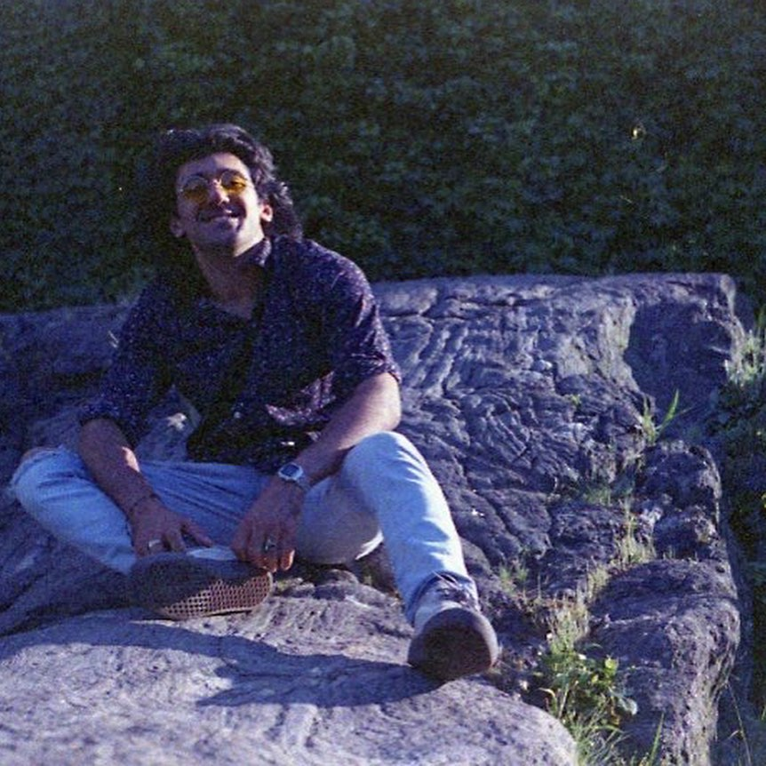

About Me
Hello! I am Johnlouis Dahhan, an aspiring programmer and senior at NYU's Tandon School of Engineering. As a child we not have the most up to date computing infrastructure. I remember being in kindergarten waiting for my parents to get off the phone so we could use dial-up on our Windows 98 desktop to go on to the PBS Kids website. Luckily through good school programs and caring teachers I have been given many opportunities to use state of the art software and really develop my skills. I hope I can use these skills to give back to the communities that gave me so much, and help expand the ways in which technology can help us live more fulfilling lives.

This portfolio was created as part of my web design class. For more samples of my work in web design, my class website can be found here.